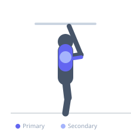
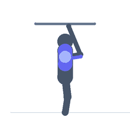

Exercise guide / Gymnastic Ring Dips
Gymnastic Ring Dips
Ring dips are a highly demanding upper-body compound exercise in which the lifter supports themselves on two suspended gymnastics rings and dips down by bending the elbows. The instability of the rings forces the pectorals, triceps, and stabilizers to work far harder than on static parallel bars, making this a premier chest and triceps developer for calisthenics athletes.
Primary muscles
pectoralis major sternal
triceps lateral head
Secondary muscles
pectoralis major clavicular
deltoid anterior
triceps long head
Stabilizers
supraspinatus
subscapularis
pectoralis minor
Equipment
Gymnastic Rings


Starting position
- Hang from the rings at arm's length above the floor, rings at hip height. Begin with arms fully extended, rings turned out so the knuckles face outward and elbows locked.
Setup
- Set rings high enough that the legs can hang straight without touching the floor, or bend the knees. Achieve a solid support hold (rings turned out) before attempting dips.
Steps
- Step 1: Begin in the support position with arms locked, rings turned out.
- Step 2: Slowly lower the body by bending the elbows, allowing a slight forward lean for chest emphasis.
- Step 3: Lower until shoulders are approximately level with the rings or below.
- Step 4: Press powerfully through the rings, extending the elbows to return to the support position.
- Step 5: At the top, turn the rings out (externally rotate) for a strong lockout and stabilizer activation.
Coaching cues
- Rings out at the top — that is the support position
- Lean forward to hit the chest
- Control the descent — the rings will want to wobble
Breathing
- Inhale as you lower. Exhale as you press back up.
Range of motion
- Lower until shoulders drop to ring level. Full lockout with rings turned out at the top.
Tempo
- 3-1-2-0
Common mistakes
- Not achieving the turned-out ring support at the top
- Dipping with zero forward lean, targeting only the triceps
- Swinging the legs to generate momentum
Safety
- Master static ring support and parallel bar dips before ring dips
- Do not perform to failure where dropping from rings is risky
- Avoid if you have shoulder instability or rotator cuff injury
Training
- strength: 3–8 reps
- hypertrophy: 6–12 reps
- strength: 3–5 sets
- Rest: {'strength': 180, 'hypertrophy': 120}